Turn your sound on and click here...
Je speelt met de enige echte Harry Potter om zijn grootste vijand ooit te verslaan. Neem het op tegen Lord Voldemort in de straten van Diagon Alley!
Altijd al eens aan de slechte kant willen staan? Nu is je kans! Speel als Lord Voldemort om zijn grootste fout goed te maken door het op te nemen tegen Harry Potter in de Forbidden Forest!